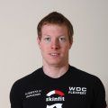

Kristof Van Daele stond samen met enkele clubgenoten in Neerpelt aan de start voor zijn eerste halve triatlon. Tussen alle festiviteiten door (organiseren van een trouwfeest, uitgebreid feesten en huwelijksreis), vond de atleet uit Maldegem nog tijd vrij om zijn debuut te maken in Limburg 116. Proficiat aan het kersverse bruidspaar! Zijn uitgebreid verslag willen we jullie niet onthouden.
De voorbereiding:
Na een prima voorjaar te hebben gehad, waarin vooral koude en wind primeerde, ging ik dan van start in mijn eerste wedstrijd nl. St-Laureins. Deze verliep allesbehalve goed. Ik voelde me de week ervoor wat zwakjes, maar dacht dat ik er dit wel zou uitlopen. Verkeerd gedacht dus! Ik had, nochtans vaak op het punt gestaan, beter opgegeven daar in Sente, maar ja, opgeven staat niet in onze woordenboek hé. Tot en met de wedstrijd in Eeklo heb ik dit gevoel zo wat aangehouden. De ene dag wat beter dan de andere, maar echt uitgerust raakte ik niet. Misschien toch een klein virusje of zo. Maar dan was er Aarschot, de laatste zware test om te zien wat ik in de benen had. Ik voelde me beter worden de voorbije weken en kon dus vol beginnen trainen. Ik presteerde daar vrij goed (75ste in 3:39:22) en wist zo dat ik op koers zat richting Neerpelt. De weken erna werd er stevig doorgetraind, met nog de kwart van Berlare ertussen (44ste), om dan te eindigen met een "clubtocht" in Gavere van 130km. Dit werd een stevige training, daar ik de enige recreant was (bedankt Michael, Dominic en Filip voor de vele raad en sorry dat ik niet zoveel kop heb kunnen doen als jullie). De laatste week gebeurde alles met wat meer kwaliteit, en de kwantiteit was een stuk minder.
De laatste rechte lijn:
Vrijdag vertrokken mijn vrouw en ik al richting Limburg en zouden daar 4 dagen blijven. We hadden een B&B geboekt voor 3 nachten, zodat ik in alle rust en zonder stress kon voorbereiden tot zondag. Vrijdag passeerden we eerst nog even in Alken voor een namiddagje relaxen (sauna, zwembad, massage, enz. ...). Nog eventjes genieten om zo terug opgeladen te geraken. zaaaalig! 's Avonds om 18h15 kwamen we dan aan in Neerpelt (nog even de pukkelpop-file meegemaakt), alwaar ik afgesproken had om 18h30 met Boelie, Steven en Jurgen aan het wedstrijdsecretariaat. Met een kwartiertje vertraging konden we dan vertrekken voor de verkenning van het fietstraject (ca. 30km). Dit verliep niet echt, hoe zou ik het zeggen, vlekkeloos. Ze hadden héél kleine en bijna onzichtbare (donker-) groene pijltjes op de grond gespoten.Als we geen zeven keer zijn misgereden dan zal het weinig zijn. Reden hiervan is dat ze ginder nogal snel een boete krijgen voor het schilderen op de baan. In vergelijking met hier bij ons! Hier krijg je er één om "niet" op de baan te schilderen. Tussen het zoeken door vroegen we zo eens naar elkaars doelstelling voor zondag. Daar zei ik tegen m'n collega's 4h30 zonder daar verder over nagadacht te hebben. We rekenden dit dan snel even uit (waardoor we nog maar eens de weg kwijt waren), en ik kwam al snel tot de conclusie dat deze eindtijd meer een illusie was dan realiteit. Zodoende had ik mijn ambitie, net als de anderen, teruggeschroefd naar 5h00, wat al meer leek op de werkelijkheid. Na de rit keerde ik dan terug naar de B&B, waar ik nog een slaatje at, een douche nam, en dan vroeg onder de wol kroop.
Zaterdag stond er nog een loopje, alsook enkele baantjes trekken in het zwembad aangestipt in de agenda. 's Morgens dus vroeg uit de veren om een stevig ontbijt te nemen met de nodige koolhydraten. Daarna ging het in looppas richting secretariaat, waar ik de wisselzone nog eens grondig ging inspecteren. Na de middag maakten mijn vrouw en ik een rustige wandeling, waarbij we het zwembad van Overpelt passeerden. Daarna wandelden we verder richting secretariaat, waar ik m'n documenten ging afhalen. Vervolgens nog een bord spaghetti op de pasta-party en dan terug vroeg in de kribbe om uitgerust te zijn voor "DEN GROOTEN DAG".
De wedstrijd:
Zondag wederom vroeg uit de nest om nog een laatste stevige maaltijd te nemen. Om negen uur vertrok ik dan richting wisselzone om alles in gereedheid te brengen. Om vijf voor elf werden we in de arena geduwd en vijf minuten later weerklonk het startschot. De start verliep vrij goed. Doordat het kanaal redelijk breed was, werd er niet teveel getrokken en geduwd. Je kon ook goed zien onder water, waardoor je beter kon letten op de techniek. Je zag ook beter je voorligger en kon zo toch wat krachten sparen door in de voeten te zwemmen. Na 32 min. zette ik dan terug voet op vaste grond, 4 min. sneller dan gehoopt (we hadden meestroom). Ik voelde me super en ging dan ook vol door op de fiets. Na 48 min. zat mijn eerste ronde (30km) er al op. Dit was zo'n kleine 38 km/h. Ik verschoot van mezelf, maar besefte dat ik dit tempo in deze warmte niet mocht aanhouden. De 2de ronde ging ik dan wat doseren, maar dit was niet zo simpel aangezien het zo soepel draaide. In de laatste ronde moest ik dit toch een beetje bekopen, want kreeg op het einde een kliene kramp in de binnenkant dij. Even een plasje gedaan en een halve liter water gedronken, bovenop de 3 liter sportdrank (dus zeker niet te weinig), en de kramp was weg. Na 3h07 kon ik dan beginnen aan mijn halve marathon. De eerste 10 kilometer gingen nog vrij goed, maar dan begon de warmte toch zijn tol te eisen. Gelukkig pendelde mijn vrouw tussen vaart en centrum, waardoor ik 4 extra bevoorradingen had. Het was een dubbel parcours, dus we kruisten elkaar meerdere malen, en staken elkaar bij elke passage een hart onder de riem. Ik zag ook mijn teamgenoten zienderogen aftakelen. De laatste kilometers leek het alsof ik enkel nog twee houten stokken had onder mijn lijf. Ik had 1h37 nodig voor mijn 21km. In een eindtijd van 4h45 kwam ik toch nog dicht bij die 4h30. Had ik misschien wat meer gedoseerd op de fiets en was het 20°C ipv. 30°C! Wie weet. Ik werd uiteindelijk 59ste (280 aangekomen) en 2de SMO'er na Boelie (4h39). Ook nog een proficiat aan de andere teamgenoten op de halve (Dirk, Harry, Jurgen en Steven) en aan de winnares bij de vrouwen op volle afstand (Mieke Dupont). 's Avonds kwamen we dan nog eens terug naar het centrum om nog wat te eten en te drinken, en nog wat na te praten waar het nog beter kan of moest. Met een welverdiend applaus kwam dan na 14:57:26 nog de laatste van de volledige over de eindstreep. Respect voor diegene die het toch maar doen zo'n volledige afstand. Verder wil ik nog iedereen bedanken voor het verschaffen van de nodige raad en tips, alsook mijn vrouwke die het toch (een beetje) kan verdragen dat ik zovele uren aan het trainen ben. Nu passeer ik nog langs Knokke (119de in 2h19) en Maldegem (in mijn achtertuin, dus voor eigen publiek), om dan even te rusten en dan rustig aan te werken naar de 3/4 van Stein. Grootse plannen dus (houd ons bezig) voor de komende jaren.
Sportieve groeten,
Kristof